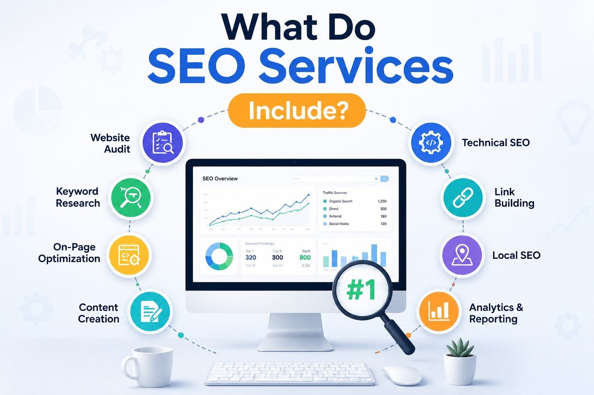

SEO Services in Pondicherry: Complete Guide to Cost, Scope & Business Growth (2026)
Better rankings, more visibility, more enquiries — SEO builds long-term business growth.
Quick Answer
Looking for SEO services in Pondicherry? SEO (Search Engine Optimization) helps your business appear on Google when customers search for your products or services. Whether you own a small business, clinic, restaurant, boutique, or startup in Pondicherry, Cuddalore, or Villupuram, SEO can bring consistent organic traffic, quality enquiries, and long-term business growth without relying only on paid advertisements.
Why Every Business Needs SEO in 2026
Imagine someone in Pondicherry searches:
- "Best dental clinic near me"
- "Interior designer in Pondicherry"
- "Wedding photographer Pondicherry"
- "Digital marketing agency Pondicherry"
- "Water purifier dealer Pondicherry"
If your business appears on the first page of Google, you have a much higher chance of getting enquiries. If your competitor appears instead, they get the customer.
That's why investing in SEO services in Pondicherry has become one of the smartest decisions for businesses looking for sustainable growth. Unlike paid advertisements that stop generating traffic once your budget ends, SEO continues to attract potential customers over time by improving your visibility in search results.
What is SEO?
SEO stands for Search Engine Optimization. It is the process of improving your website so that Google understands your business and shows it to people searching for related products or services.
The goal is simple: Higher Google Ranking → More Website Visitors → More Enquiries → More Customers → More Revenue.
Good SEO focuses on helping your business become easy to find, trustworthy, and relevant to local customers.
Why Local Businesses in Pondicherry Should Invest in SEO
Many business owners still depend mainly on referrals, banners, pamphlets, or word of mouth. While those methods still have value, customer behaviour has changed. Today, people search online before making a purchase.
Whether they need a doctor, restaurant, coaching centre, salon, or construction company, their first step is usually Google. If your business is visible online, you are already one step ahead.
Businesses That Benefit Most from SEO

SEO works well for almost every industry, including:
- Restaurants, Hotels & Resorts, Cafes
- Dental Clinics, Hospitals
- Builders, Real Estate Agencies, Interior Designers, Architects
- Tuition Centres, Schools, Coaching Institutes
- Boutiques, Jewellery Shops, Home Bakers, Beauty Parlours, Salons
- Fitness Centres, Water Purifier Dealers, Digital Service Providers
- Women Entrepreneurs, Startups
Whether your business is large or small, SEO helps customers discover you when they are actively searching.
Why SEO is Important for Businesses in Pondicherry
Pondicherry has become a growing business hub. Tourists visit throughout the year, new residential areas continue to expand, students move here for education, and small businesses are increasing every year. This means more competition.
Customers no longer choose businesses based only on location. They compare Google Reviews, Website, Photos, Search Rankings, and Online Reputation. Businesses that invest in SEO gain a clear advantage.
What Do SEO Services Include?
Professional SEO is much more than adding keywords to a website. A complete SEO strategy includes several important activities.
1. Website SEO Audit
The first step is understanding your website's current condition. An SEO audit checks website speed, mobile responsiveness, broken links, technical issues, duplicate content, indexing problems, and user experience. This creates a roadmap for improvement.
2. Keyword Research
Every customer searches differently. For example: "Dentist in Pondicherry," "Best dentist near me," "Teeth cleaning Pondicherry," "Dental implants Pondicherry." Keyword research identifies the terms your customers actually use, allowing your website to target valuable searches.
3. On-Page SEO
On-page SEO improves individual pages. It includes optimized titles, meta descriptions, headings, internal links, image optimization, keyword placement, URL structure, and content optimization. This helps Google understand what each page is about.
4. Technical SEO
Technical SEO ensures your website performs well behind the scenes — faster loading speed, mobile optimization, HTTPS security, XML sitemap, robots.txt, schema markup, crawlability, and Core Web Vitals improvements. These factors improve both search rankings and user experience.
5. Local SEO
Local SEO is one of the most important services for businesses in Pondicherry. It helps your business appear in searches like "near me," "open now," and "best in Pondicherry." Local SEO includes Google Business Profile optimization, local citations, NAP consistency (Name, Address, Phone), customer reviews, location pages, and local content creation. This improves your chances of appearing in Google Maps and local search results.
6. Content Marketing
Google rewards websites that regularly publish useful content — blogs, service pages, FAQs, case studies, and location-specific content. Helpful content builds trust and attracts visitors naturally.
7. Link Building
Backlinks from trusted websites act like recommendations. Quality backlinks improve your website's authority and help increase search rankings over time. Ethical, high-quality link building is always better than buying low-quality links.
SEO vs Google Ads
Many business owners ask: "Should I invest in SEO or Google Ads?" The answer depends on your goals.
| SEO | Google Ads |
|---|---|
| Long-term investment | Immediate visibility |
| Organic traffic | Paid traffic |
| Builds trust | Good for quick campaigns |
| Results improve over time | Stops when budget ends |
| Better ROI over the long run | Useful for promotions and launches |
| Supports brand authority | Ideal for instant lead generation |
For many businesses, using SEO together with Google Ads creates the best overall marketing strategy.
How Much Do SEO Services Cost in Pondicherry?
SEO pricing depends on several factors:
- Business Size — A small local shop requires a different strategy than a company serving multiple cities.
- Competition — Ranking for "Restaurant in Pondicherry" is different from ranking for "Digital Marketing Agency in Pondicherry." Highly competitive industries require more time and effort.
- Website Size — A five-page website requires less work than a large e-commerce website with hundreds of products.
- SEO Goals — Some businesses only need Local SEO. Others require Technical SEO, content marketing, monthly blogging, link building, or multi-location optimization.
Because every business has unique needs, professional SEO agencies usually provide customized plans rather than fixed pricing.
Common SEO Mistakes Business Owners Make
- No website
- Slow website speed
- Poor mobile experience
- Duplicate content
- Ignoring Google reviews
- Not updating Google Business Profile
- Stuffing too many keywords into pages
- Publishing very little content
- Expecting overnight rankings
- Choosing cheap, low-quality SEO services
SEO is a long-term investment that rewards consistency.
Real Example: A Boutique in Pondicherry
Consider a boutique run by a woman entrepreneur in Pondicherry. Initially: no website, limited Instagram presence, no Google visibility, and few enquiries outside existing customers.
After implementing SEO: a professional website, optimized product pages, Google Business Profile updates, location-based content, and a customer review strategy.
Within several months: more website visits, better Google rankings, increased enquiries, improved trust, and more repeat customers. This demonstrates how SEO can support steady business growth.
Why Women Entrepreneurs Should Focus on SEO
Many successful businesses today begin from home — home bakeries, handmade jewellery, tailoring services, boutique stores, beauty professionals, home catering, and online gift businesses.
SEO helps these businesses become visible beyond social media by allowing customers to discover them through Google searches. Unlike social media posts that quickly disappear from feeds, optimized website content can continue attracting visitors for months or even years.
Why Small Businesses Should Start SEO Early
One common misconception is that SEO should begin only after a business becomes large. In reality, starting early offers several advantages: lower competition, faster authority building, better online reputation, stronger Google presence, and consistent organic traffic.
Businesses that delay SEO often spend more time catching up with competitors who invested earlier.
Why Choose BM TechX for SEO Services in Pondicherry?
At BM TechX, we help businesses strengthen their online presence with practical, results-oriented SEO strategies. Our SEO services include:
- Website SEO Audits
- Keyword Research
- On-Page SEO
- Technical SEO
- Local SEO
- Google Business Profile Optimization
- Content Strategy
- SEO-Friendly Website Development
- Monthly SEO Reporting
We proudly serve businesses across Pondicherry, Cuddalore, and Villupuram, helping local brands improve visibility and attract quality leads.
As part of the ABM ecosystem, our learning partner BM Academy has successfully trained more than 1,400 learners and helped 150+ students secure real job placements. This strong industry connection keeps our team updated with the latest SEO trends and best practices, ensuring strategies are based on practical experience rather than outdated techniques.
Our focus is simple: Better Rankings → Better Visibility → Better Business Growth.
Frequently Asked Questions
1. What are SEO services?
SEO services improve your website's visibility on Google through optimization, content creation, technical improvements, and local search strategies.
2. How long does SEO take to show results?
Most businesses begin seeing noticeable improvements within 3 to 6 months, depending on competition, website quality, and consistency.
3. Is SEO suitable for small businesses?
Yes. SEO is especially valuable for small businesses because it helps attract customers without depending entirely on paid advertisements.
4. What is Local SEO?
Local SEO focuses on helping businesses appear in Google Maps and local searches such as "near me" or "best service in Pondicherry."
5. Can SEO help women entrepreneurs?
Absolutely. SEO allows women-led businesses to reach more customers online, build credibility, and grow without requiring large advertising budgets.
6. Is Google Business Profile important for SEO?
Yes. A well-optimized Google Business Profile improves local visibility, increases customer trust, and supports better rankings in local search results.
7. Does SEO guarantee the first position on Google?
No ethical agency can guarantee the number one position. SEO depends on many factors, including competition, website quality, and Google's ranking algorithms.
8. What is the difference between SEO and paid advertising?
SEO focuses on earning organic traffic over time, while paid advertising provides immediate visibility but stops once the advertising budget ends.
9. Do I need a website for SEO?
Yes. A website serves as the foundation of your SEO strategy and allows Google to index and rank your content effectively.
10. Does BM TechX provide SEO services outside Pondicherry?
Yes. BM TechX also supports businesses in Cuddalore, Villupuram, and nearby regions with customized SEO strategies designed for local growth.
Final Thoughts
Whether you're running a restaurant in White Town, a clinic in Lawspet, a boutique in Muthialpet, a construction company in Villupuram, or a home-based business in Cuddalore, investing in SEO services in Pondicherry is one of the smartest long-term decisions you can make.
SEO isn't about chasing quick wins—it's about building a strong online presence that consistently brings the right customers to your business. With improved search rankings, optimized local visibility, and valuable content, your business can earn trust, attract quality enquiries, and stay ahead of the competition for years to come.
Get Your FREE GMB & Website Audit
Want to know why your competitors rank higher on Google? Let our experts analyse your online presence and provide practical recommendations to improve your search visibility.
- ✅ FREE Google Business Profile Audit
- ✅ FREE Website SEO Audit
- ✅ Customized SEO Proposal for Your Business
Let's identify opportunities, strengthen your online presence, and create an SEO strategy that helps your business grow across Pondicherry, Cuddalore, and Villupuram.